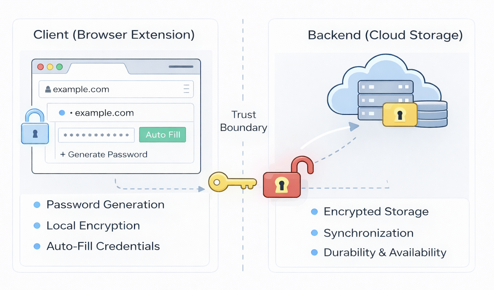

Build Your Own Password Manager
In this article, we’re going to dig into the internals of a password vault by building a simple one from scratch. Rather than treating a password vault as a black box, we’ll look under the hood and explore how secrets are generated, protected, synchronized, and used in real time across many websites and devices. The goal of this lab is not to produce a production-ready product, but to help you build stronger intuition about how modern password vaults work beneath the surface.
Why do password vaults exist? Over the past 15–20 years, there has been a dramatic proliferation of applications that require us to create and remember sometimes hundreds of different usernames and passwords. This reality has led to widespread password reuse, weak credentials, and repeated large-scale credential breaches. Every new application, website, or cloud service compounds the problem, pushing users toward either fragile habits or significant security risk. At the same time, individuals and enterprises now depend on dozens — and often hundreds — of online accounts to function day to day. In that world, a password vault is no longer a convenience feature; it is critical security infrastructure.
Modern password vaults respond to this challenge by shifting the burden of security away from human memory and toward well-designed systems. They automatically generate strong, random passwords, store them securely, and seamlessly insert them into websites when needed. But delivering both usability and strong security requires several carefully coordinated components: a client that encrypts data locally, a backend that stores only encrypted secrets and synchronizes them across devices, and a clear trust boundary that ensures the provider never has access to your plaintext passwords. When these pieces work together correctly, users get a system that is both convenient and resilient, which is something with a little more complexity to build than it initially appears.
In this guide, we’ll break that system down piece by piece. We’ll begin with a high-level architecture of a password vault, then dive into the browser extension as the primary client, exploring how it generates passwords, encrypts them locally, and auto-fills credentials on websites. From there, we’ll examine the backend that stores encrypted data and keeps devices in sync. Finally, we’ll consider the security tradeoffs — what password vaults protect against, what they don’t, and why design choices like zero-knowledge encryption are both powerful and unforgiving.
Password Vault Architecture
At its core, a password vault is not just a place where passwords are stored — it is a small, distributed identity system whose job is to manage secrets safely across devices, contexts, and time. When you strip away vendor branding and marketed features, most modern vaults share a common architectural pattern built around a clear division of responsibility between a local client and a remote backend.
On one side sits the client, which in our case will be a browser extension. This is where the user actually interacts with the vault. The extension is responsible for generating strong passwords, encrypting secrets before they ever leave the device, recognizing when a user is on a site that has stored credentials, and safely auto-filling those credentials when appropriate. In many ways, the browser extension is the “security brain” of the system: it holds the keys, performs cryptographic operations, and decides how secrets are used in real time.
On the other side sits the backend service, which acts as a secure storage and synchronization layer. The backend does not need to understand your passwords; in fact, in a well-designed system it never sees them in plaintext. Instead, it stores only encrypted data and makes that data available across devices, such as your laptop, phone, and tablet so your vault follows you wherever you go. It is also responsible for durability and availability, ensuring that your secrets are not lost if a single device fails.
Separating these two sides is a crucial trust boundary. Everything sensitive, such as your master password, encryption keys, and plaintext credentials, lives on the client. Everything that lives on the server is encrypted in a way that only your client can decrypt. This separation is what enables both convenience and privacy: you get seamless cloud sync without giving the provider the ability to read your secrets.
If you zoom out, you can think of the architecture as two tightly coupled layers:
- Client (Browser Extension): where passwords are generated, encrypted, managed, and used in real time.
- Backend (Cloud Storage): where only encrypted vault data is stored, synchronized, and preserved over time.
Together, these two layers form a lightweight but powerful system that replaces scattered, insecure password habits with a single, well-protected vault. In the next section, we’ll dive deeper into the browser extension itself — the component that most users interact with and where many of the most important security decisions are made.
The Browser Extension (Client)

If the high-level architecture defines the boundaries of a password vault, the browser extension is where most of the real work actually happens. It is both the user interface and the security core of the system — the place where passwords are created, encrypted, retrieved, and used in real time. In many ways, the extension is the most critical component of a modern vault because it is where trust is anchored and where secrets are handled in plaintext, even if only briefly.
What is a browser extension?
The browser extension is the primary client through which users interact with a password vault. It is both the user interface and the security core of the system — the place where passwords are created, encrypted, retrieved, and used in real time. In many ways, the extension is the most critical component of a modern vault because it is where trust is anchored and where secrets are handled in plaintext, even if only briefly.
An extension can:
- Detect which website you are currently on by reading the page’s URL.
- Read and write to login form fields such as username and password inputs.
- Store data locally on your device.
- Communicate securely with a backend server.
- Display its own user interface via pop-ups, side panels, or inline prompts.
These capabilities make the browser extension the natural place to implement a password vault. It can recognize when you are on a site where you have credentials stored, offer to generate a new password, encrypt secrets locally, and automatically fill them into login forms — all without forcing you to copy and paste manually.
Creating a vault account
The first interaction most users have with the extension is creating their vault account. This usually begins with choosing a master password, which serves as the root of trust for the entire system.
Unlike the passwords stored in the vault, the master password is something you must remember. It is not sent to the server, and in a well-designed system the provider can never recover it for you. Instead, the extension uses this password to derive a cryptographic key that will be used to encrypt all of your stored secrets.
From an architectural perspective, this step is crucial: it establishes a clear trust boundary between the client and the backend. The server will only ever see encrypted data, while the keys to unlock that data remain exclusively on your device.
Creating and storing credentials
Once your vault is set up, the extension helps you capture and manage credentials whenever you create or update accounts on websites.
When you save a password, the extension typically records:
- The website URL
- Your username or email
- The generated password
- Metadata such as when the credential was created or last updated
These pieces of information are bundled together as a single “vault entry.” Before anything leaves your device, the extension encrypts this entry using the key derived from your master password. Only then is it sent to the backend for storage.
This design ensures that even if the backend is compromised, your actual passwords remain unreadable without your master key.
The password generation engine
A core feature of any password vault is its ability to generate strong, random passwords automatically.
Rather than asking users to invent credentials, the extension provides a small password generator that lets you specify preferences such as:
- Desired length
- Whether to include numbers
- Whether to include symbols
- Whether to avoid visually similar characters like “O” and “0”
Under the hood, a good vault uses a cryptographically secure random number generator rather than predictable patterns or simple rules. The result is passwords that are both long and unpredictable — far stronger than anything a human would typically create on their own.
This generator is not just a convenience feature; it is a fundamental security improvement that reduces the risk of credential reuse and brute-force attacks across your accounts.
Client-side encryption and the zero-knowledge model

Perhaps the most important design choice in a modern password vault is client-side encryption, sometimes referred to as a zero-knowledge model.
In this model:
- Your master password never leaves your device.
- All vault data is encrypted locally before being sent to the server.
- The backend stores only encrypted blobs of data, not readable passwords.
- Even the service provider cannot decrypt your vault.
This has significant benefits. It means that even if the company running the vault is breached, your secrets remain protected. It also prevents insiders at the provider from reading your passwords.
However, this security comes with real tradeoffs. If you forget your master password, there is no backdoor or recovery option — your vault is effectively lost. This is a harsh but intentional consequence of strong security. The system chooses privacy and protection over convenience.
Retrieving and decrypting secrets
When you later need to access a password, the process runs in reverse.
The extension requests your encrypted vault data from the backend. Once it arrives on your device, the extension uses your master password–derived key to decrypt only the entries you need in memory. At no point are plaintext passwords stored permanently on the server, and they exist on your device only temporarily while you are using them.
This local decryption step is what preserves the zero-knowledge property while still allowing seamless cloud sync.
Auto-fill in action
One of the most visible benefits of a password vault is automatic form filling.
When you navigate to a website, the extension checks whether you have saved credentials for that URL. If you do, it may:
- Display a small icon in the username or password field, or
- Show a prompt offering to fill in your credentials automatically.
If you approve, the extension retrieves the relevant entry from your local decrypted vault and inserts the username and password into the login form for you. From the user’s perspective, this feels effortless; from a security perspective, it means your secrets never have to be manually typed or copied into the clipboard.
Updating and rotating passwords
A good password vault does not just store secrets — it helps you manage them over time.
When you change a password on a website, the extension can detect that change and prompt you to update the stored value in your vault. It may also suggest generating a new, stronger password rather than reusing an old one.
Behind the scenes, this simply means encrypting a new vault entry and replacing the old one in the backend. But from a usability standpoint, it encourages better security hygiene without forcing users to think about it.
How the browser extension fits into the whole system
Stepping back, the browser extension plays three roles simultaneously:
- User interface — where you interact with your vault.
- Security engine — where encryption and key management happen.
- Integration layer — where the vault interacts with websites in real time.
It depends on the backend for storage and synchronization, but it does not trust the backend with your secrets. Instead, it treats the server as a dumb storage layer that only ever sees encrypted data.
In the next section, we’ll move from the client side to the backend service, examining how encrypted vault data is stored, synchronized, and protected at scale.
The Backend — Storage, Sync, and Reliability

The backend is the storage and synchronization layer of the password vault. It does not generate passwords, see plaintext secrets, or perform decryption. Instead, its primary role is to reliably store encrypted data, synchronize changes across devices, and ensure that your vault remains available even when something goes wrong. In a well-designed system, the backend is powerful in terms of reliability and scale, but deliberately limited in terms of trust.
From an architectural perspective, this separation is intentional: the client owns secrets, while the server owns availability.
Account isolation and data boundaries
Every user of the vault has their own logically separate store of encrypted data. The backend organizes this data so that one person’s vault is never mixed with another’s, even if the underlying storage system is shared.
This isolation typically means:
- Each user has a unique identifier.
- All encrypted vault entries are associated with that identifier.
- Access controls ensure that only authenticated clients for that user can read or write their data.
Importantly, this separation happens before decryption is ever considered, because the backend never has the ability to decrypt vault contents in the first place. Even if two users stored credentials for the same website, their encrypted records would be distinct, independent, and unintelligible to the server.
What the backend actually stores
Because encryption happens on the client, the backend’s view of the world is intentionally limited.
In practice, it stores things like:
- Encrypted vault entries (opaque blobs from the server’s perspective).
- Metadata such as timestamps for when entries were created or updated.
- Device or session information to help manage synchronization.
- Audit-like records about when changes occurred (without seeing their contents).
Crucially, it does not store:
- Plaintext passwords.
- The user’s master password.
- Encryption keys.
From a security standpoint, this design dramatically reduces the impact of a server breach. An attacker who compromises the backend would gain access only to encrypted data, which is useless without the client-side keys.
Sync across devices
One of the main reasons users rely on a backend is so their vault works seamlessly across multiple devices — laptop, phone, tablet, and sometimes even different browsers.
The typical sync model works like this:
- A change is made on one device (for example, a new password is saved).
- The browser extension encrypts that change locally.
- The encrypted update is sent to the backend.
- The backend stores the update and marks it as the latest version.
- Other devices periodically check for changes or receive push notifications.
- Those devices download the encrypted update and decrypt it locally.
At no point does the server need to understand the contents of the vault to perform this synchronization. It simply moves encrypted data between clients and ensures everyone stays up to date.
This model gives users the convenience of cloud sync while preserving a strong security boundary.
Versioning and conflict resolution
When multiple devices are involved, conflicts can sometimes occur — for example, if you edit the same entry on two devices at nearly the same time.
To handle this, the backend typically maintains some form of versioning or change history. This might include:
- A timestamp for each update.
- A simple “last writer wins” rule.
- Or more sophisticated merge logic if multiple fields can be edited independently.
From the user’s perspective, this is usually invisible. The vault just “works.” But architecturally, it is an important part of making a distributed system feel reliable and predictable.
Availability, redundancy, and backups
Unlike your browser extension, which lives on a single device, the backend must be designed for high availability. If the server goes down, users may still be able to read existing entries locally, but they cannot sync new changes.
To prevent data loss, most real systems include:
- Replication — vault data is stored in multiple locations.
- Backups — periodic snapshots are taken in case of corruption or failure.
- Disaster recovery — systems are designed to survive outages, data center failures, or hardware issues.
From a user’s perspective, this means your vault should persist even if your laptop is destroyed or the company’s servers experience problems.
Authentication to the backend
Even though the backend cannot read your secrets, it still needs to know who you are so it can store and retrieve the correct encrypted vault.
Typically, this involves:
- Logging into the vault service using your account credentials (which may be separate from your master password).
- Establishing a secure session between the client and server.
- Using that session to authorize read and write operations on your encrypted data.
This is another important trust boundary: authentication proves your identity to the backend, while encryption protects your secrets from the backend.
How the backend fits into the whole system
Stepping back, the backend plays three core roles in the overall architecture:
- Secure storage — keeping encrypted secrets safe over time.
- Synchronization — ensuring your vault is consistent across devices.
- Durability and availability — making sure your data is not lost.
It deliberately avoids being a place where sensitive operations occur. Instead, it acts as a reliable infrastructure layer that supports the client while respecting the zero-knowledge model.
In the next section, we’ll shift from architecture to security and examine the threat model of a password vault — what it protects against, what it does not, and why certain design choices matter.
Threat Model Of A Password Vault

A password vault is a powerful security tool, but it is not magic. Its effectiveness depends on assumptions about where threats come from, where trust is placed, and where risk remains. Thinking explicitly about this threat model will help you to reason like a security architect rather than just a user of a product.
What a password vault is designed to protect against
At its core, a well-designed password vault is meant to reduce several common and serious risks in modern digital life.
First, it mitigates password reuse.
Without a vault, most people inevitably reuse the same handful of passwords across many sites. When one of those sites is breached, attackers can “stuff” those credentials into other services and gain access elsewhere. By generating and storing unique, random passwords for every account, a vault breaks this chain of compromise.
Second, it reduces exposure to phishing.
Because a vault associates credentials with specific URLs, it is less likely to auto-fill passwords on lookalike or fraudulent websites. While this is not a perfect defense, it raises the bar significantly compared to manual typing, where users often cannot reliably distinguish legitimate sites from impostors.
Third, it limits the impact of data breaches.
If the backend storing your vault data is compromised, an attacker only sees encrypted blobs rather than plaintext secrets. Without your master key, those blobs are effectively useless. This is a very different risk profile from traditional cloud services that store passwords in readable form.
Finally, it improves everyday security hygiene.
By making strong passwords easy to use, a vault aligns usability with security rather than forcing users to choose between the two. In practice, this may be one of its most important benefits.
What a password vault does not protect against
Equally important is understanding the limits of what a vault can do.
It does not protect you from malware on your own device.
If your laptop or phone is infected with spyware or a keylogger, an attacker may be able to capture your master password, watch you unlock your vault, or intercept credentials as they are auto-filled. In this scenario, the vault cannot defend itself because the threat is already inside the trusted boundary.
It does not protect you from shoulder surfing or social engineering.
If someone physically watches you type your master password, or convinces you to share it, no amount of encryption can save you. Human factors remain a critical weak point in any security system.
It does not protect you if you voluntarily give up credentials.
If you are tricked into entering your master password into a fake site or handing it to someone over the phone, the vault’s technical protections become irrelevant. The system assumes you will keep that secret.
And it cannot recover your vault if you lose your master password.
This is not a failure of the system — it is a deliberate consequence of the zero-knowledge model. The same design that prevents the provider from reading your data also prevents them from rescuing you if you forget your key.
Why zero-knowledge matters here
The zero-knowledge model we discussed earlier is central to this threat model.
Because your secrets are encrypted client-side, the provider cannot be a single point of failure. A breach of the backend does not automatically mean a breach of your vault. This is a strong guarantee compared to many other cloud services.
However, that same guarantee means you bear ultimate responsibility for protecting your master password. The system trades convenience for security in a very explicit way. Understanding that tradeoff is critical to using a vault effectively.
How this connects to the rest of the architecture
You can map this threat model back to the components we’ve already described:
- The browser extension is the trusted core where secrets exist in plaintext, so its security matters most.
- The backend is designed to be untrusted with respect to secrets, so a server compromise is less catastrophic.
- The encryption boundary between client and server is what makes this whole model possible.
In that sense, the architecture of a password vault is shaped directly by its threat model. Design choices like client-side encryption, local decryption, and minimal server knowledge are not accidental — they are responses to real-world risks.
In the next and final section, we’ll step back and tie everything together — reflecting on what it really means to “build your own password vault,” what you should take away from this mental model, and how you might experiment with a simple implementation in code.
Closing
When you zoom out from the individual components we’ve examined, the bigger takeaway isn’t just how a password vault works — it’s how security systems are built in the real world.
Building a password vault is ultimately about deciding where trust lives. Modern vaults concentrate sensitive operations — encryption, key management, and plaintext handling — on the client, while treating the backend as a reliable but untrusted storage layer. That architectural choice makes cloud synchronization possible without requiring users to surrender their privacy, but it also means the master password becomes the single gatekeeper to their digital life.
Throughout the article, we saw how each part of the system plays a distinct role. The browser extension is where usability and security intersect: it generates strong credentials, encrypts data locally, and integrates seamlessly with everyday websites. The backend provides durability, availability, and synchronization so the vault follows users across devices. The overall design is guided by a clear threat model that balances protection against real risks with an honest recognition of what no technical system can fully prevent.
The goal of this article was not to describe a production-ready product, but to give you an architectural intuition for how password vaults fit together. If you now understand why client-side encryption matters, why zero-knowledge creates both safety and responsibility, and how sync can work without exposing secrets, then you are already reasoning about password managers the way real system designers do.
More broadly, this mental model applies well beyond password vaults. Any system that handles secrets — whether API keys, personal data, or authentication credentials — requires careful thinking about where trust resides, how risk is managed, and how to balance security with usability. If this article has done its job, you should now be able to look at security-sensitive cloud services and reason about their design choices rather than treating them as black boxes.